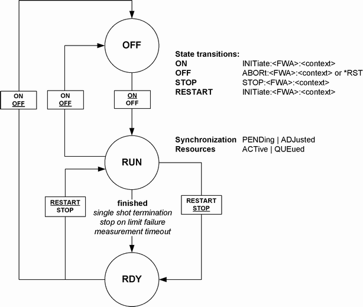

Measurement control commands are used to switch over between the following main measurement states:
- OFF: Measurement switched off, no resources allocated, no results available (when entered after STOP...). OFF corresponds to the SCPI trigger state IDLE.
- RDY: Measurement has been terminated. If no error occurred, valid results are available. RDY corresponds to the SCPI trigger state IDLE.
- RUN: Measurement running (after INITiate..., READ...), synchronization pending or adjusted, resources active or queued (see "Measurement Substates"). RUN corresponds to the SCPI trigger state INITiated.
The main measurement state can be queried using FETCh:<FWA>:<context>:STATe? where <FWA> denotes the firmware application and <context> is to be replaced by the name of the measurement.
Example: FETCh:GPRF:MEASurement:POWer:STATe? (possible response: RDY).
The relationship between measurement states and measurement control commands is shown in the following diagram:

Measurement control commands are of the following type (see also "Firmware Applications"):
SCPI subsystem | <Application>, e.g. | Measurement instance | Context |
|---|---|---|---|
INITiate ABORt STOP | :LTE :GPRF | :MEASurement<i> | :POWer :MEValuation ... (depending on <Application>) |
Example: INITiate:GPRF:MEASurement:POWer